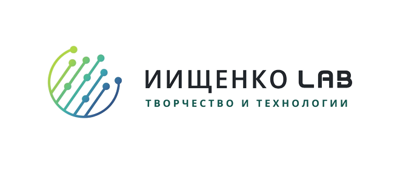

Личный агент · запуск на компьютереЗдесь не вводят пароли, коды или платёжные данные. Отметки шагов хранятся только в этом браузере. Вступление в рабочую группу добровольное; индивидуальные условия поддержки на этой странице не объявляются.